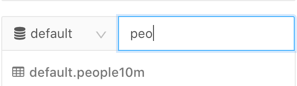

Set up a user to query a table
This article shows how an administrator can add a user, create a table containing 10 million people records from a Databricks dataset, and allow a user to access the table. Next, it shows how the user can run a query and view the query runtime details.
Important
Data access control is always enabled in Databricks SQL, which means that users must always be granted access to data.
Step 1: Add a user
Go to the admin settings page.
Click on the Identity and access tab.
Next to Users, click Manage.
Click Add User.
Enter the user email ID. The examples in this article assume the user is
user@example.com.Click Add.
Databricks sends a confirmation email with a temporary password. If the user does not receive the confirmation email within 5 minutes, ask the user to check their spam folder.
The user is added to the workspace.
If necessary, allow the the user to access Databricks SQL by selecting the Databricks SQL access checkbox. All users in new workspaces have this entitlement by default.
Note
If your workspace was enabled for Databricks SQL during the Public Preview—that is, before the week beginning September 7, 2021—users retain the entitlement assigned before that date, unless you change it. In other words, if a user did not have the Databricks SQL access entitlement during the Public Preview, they will not have it now unless an administrator gives it to them.
Click Confirm.
Step 2: Create a table of 10 million people
Click New in the sidebar and select Query.
In the drop-box at the left, select a SQL warehouse, such as Starter Warehouse.
Paste the following in the SQL editor:
CREATE TABLE default.people10m OPTIONS (PATH 'dbfs:/databricks-datasets/learning-spark-v2/people/people-10m.delta')
This statement creates a Delta table using Delta Lake files stored in Databricks datasets.
Press Ctrl/Cmd + Enter or click the Execute button. The query will return
No data was returned.To refresh the schema, click the
 button at the bottom of the schema browser.
button at the bottom of the schema browser.Type
peoin the text box to the right of the schema. The schema browser displays the new table.
Step 3: Configure access to the default.people10m table
Enable the user you created in Step 1 to access the default.people10m table you created in Step 3.
You can configure access using Catalog Explorer or SQL editor.
Catalog Explorer
Click Catalog in the sidebar.
In the drop-down list at the top right, select a SQL warehouse, such as Starter Warehouse. The
defaultschema is selected. The schema comment and owner display.Type
peoin the text box following thedefaultschema. Catalog Explorer displays thepeople10mtable.Click the Permissions tab.
Click the Grant button.
Enter
user@example.com.Select the USAGE checkbox.
Click OK.
Click the
people10mtable.Click the Permissions tab.
Click the Grant button.
Enter
user@example.com.Click the SELECT and READ_METADATA checkboxes.
Click OK.
SQL editor
Click New in the sidebar and select Query.
In the drop-down box at the left, select a SQL warehouse, such as Starter Warehouse.
Enter the following queries one by one:
GRANT USAGE ON SCHEMA default TO `user@example.com`; GRANT SELECT, READ_METADATA ON TABLE default.people10m TO `user@example.com`; SHOW GRANTS `user@example.com` ON TABLE default.people10m;
After each query, press Ctrl/Cmd + Enter or click the Execute button. After the last query, it should display:
+------------------+---------------+------------+-----------------------+ | Principal | ActionType | ObjectType | ObjectKey | +------------------+---------------+------------+-----------------------+ | user@example.com | READ_METADATA | TABLE | `default`.`people10m` | +------------------+---------------+------------+-----------------------+ | user@example.com | SELECT | TABLE | `default`.`people10m` | +------------------+---------------+------------+-----------------------+ | user@example.com | USAGE | SCHEMA | default | +------------------+---------------+------------+-----------------------+
Step 6: View query history
Click Query History in the sidebar.
Click a string in the Query column to display query details:
Next steps
To learn how to enable access to your own data and tables, see Access control overview.
To walk through the process to enable access, go to the Get Started pane on https://<databricks-instance>/sql, replacing <databricks-instance> with the Databricks workspace instance name, for example dbc-a1b2345c-d6e7.cloud.databricks.com.